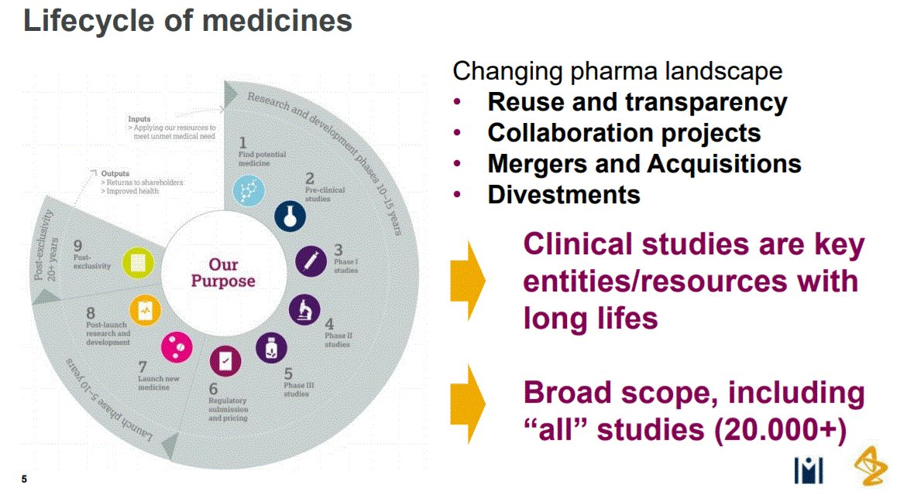
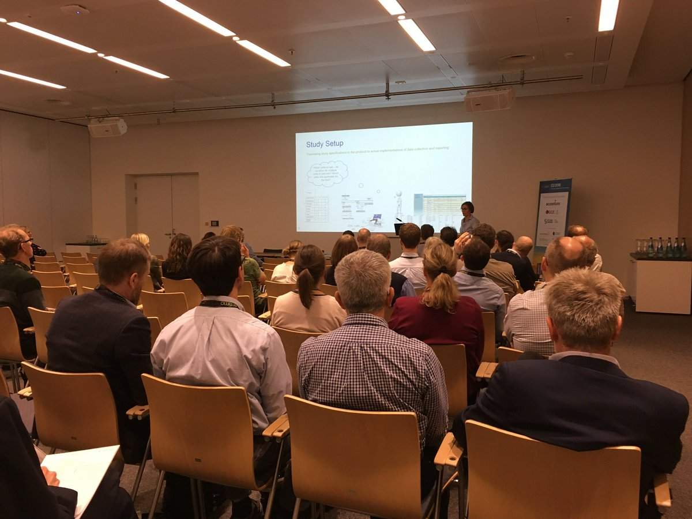
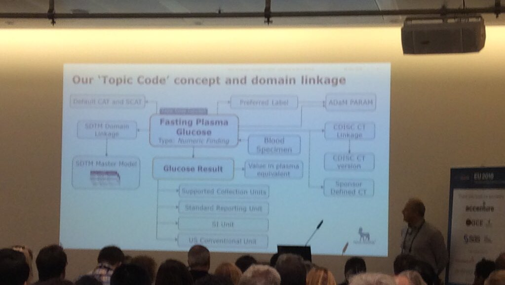

November 2018
I worked with SAS at Volvo in the late 80ies. Very seldom did we use XPT - we used SQL/DS and DB2 databases. When I joined AZ in 2001 I was confused when people meant folders and XPT datasets when they said ”database”. twitter.com/JAertsXML4Phar…
’The challenges of using data at scale, however, is rooted in the “data debt” accumulated over time by enterprises struggling to manage the extreme volume and variety of their data.’ -@andyhpalmer linkedin.com/content-guest/…
So many things I recognise reading this excellent article by @andyhpalmer - ”DataOps is about acknowledging reality. Data is going to multiply, duplicate and live where it’s not suppose to.” linkedin.com/content-guest/…
Summerasing the #EUConnect18 @PHUSETwitta conference. Great event. But, what did I miss? Would be great to learn more about how we handle the challenges with reuse/transparency, and the many merger, acquisitions and divestments.

@PHUSETwitta Great event. Many thanks!! When do you plan to have the papers and presentations uploaded on phuse.eu/euconnect18-pr…? And
Wow - I am attending @KirstenLangendo’s #EUConnect18 presentation on Biomedical Concepts with @darth_jozza @NovasTaylor @nomini and @Assero_UK in front of me

Cool. Lots of #LinkedData things to catch up on after coming home from #EUConnect18 @PHUSETwitta twitter.com/pgroth/status/…
Great start of the afternoon Trend & Technologies at #euconnect18 with @NovasTaylor #LinkedData presentation Checkout the workgroup Tim talked about phuse.eu/linked-data-gr…
Attending a #EUConnect2018 @PHUSETwitta presentation on how to manage changes in @CDISC CTs and is reminded of our work 10 years ago on data standard version/config mgmt slideshare.net/kerfors/design…

Great that @NovasTaylor @darth_jozza is introducing IRI as the correct name for URI in the hands-on workshop phuse.eu/eu-connect-how… I'll make a note about it in our "Study URI" #EUInterconnect18 presentation tomorrow